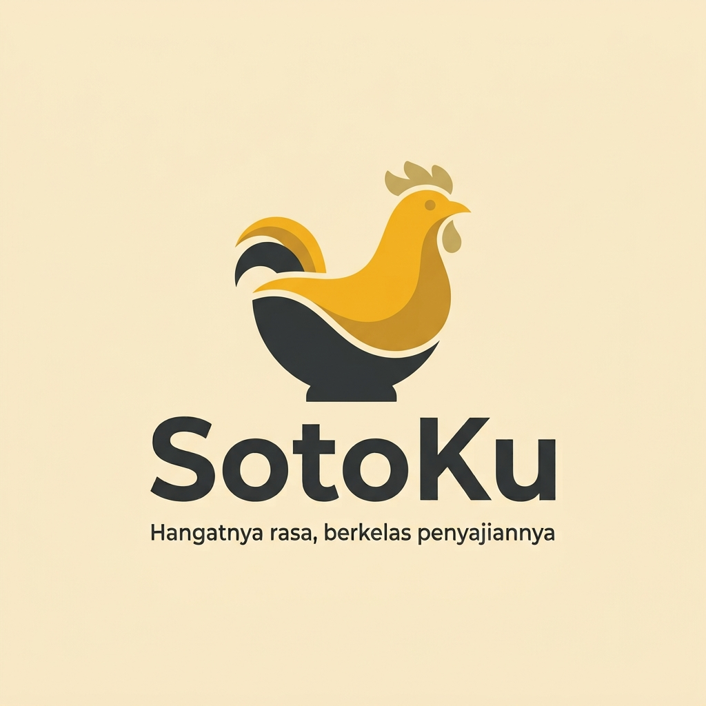
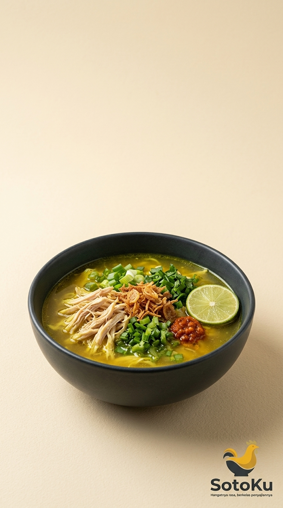

Food Brand Indonesia
Rasa yang dekat.
Tampil berkelas.
Kenali SotoKu
Satu mangkuk,
langsung menggugah.

Soto ayam kuning yang akrab, hadir dengan penyajian yang lebih rapi dan elegan.
Detail yang terasa
Kuningnya menggoda.
Teksturnya mengundang.
Ayam suwir
Daun bawang
Bawang goreng
Jeruk nipis
Nikmati visualnya. Bayangkan suapan pertamanya.
Untuk siapa saja
Ada momen yang terasa lebih lengkap dengan SotoKu.
Kenali brand soto yang hangat secara personal, autentik dalam produk, dan profesional dalam penyajiannya.
Hangatnya rasa,
berkelas penyajiannya.
Kenali SotoKu lebih dekat.